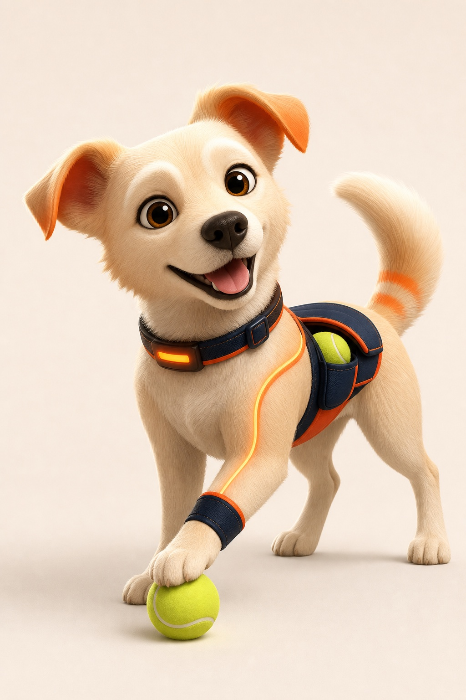
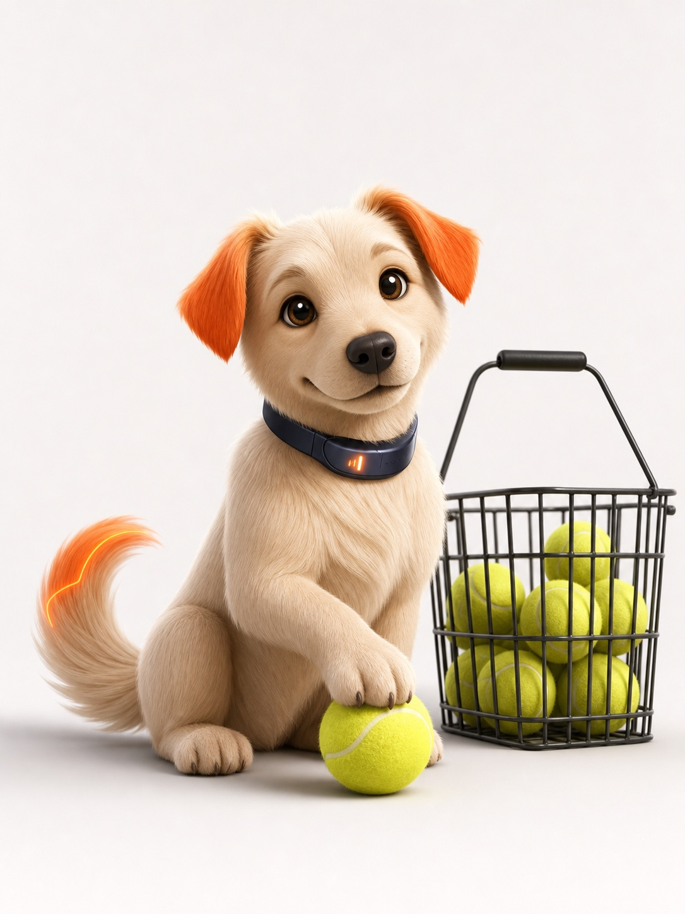
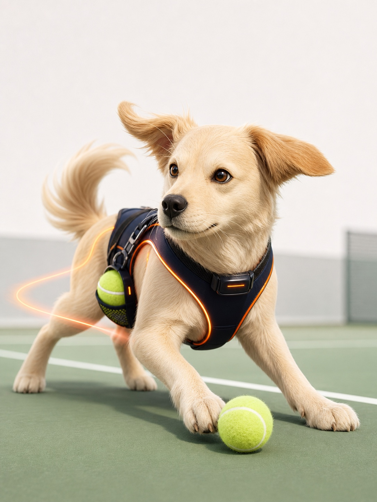

一句话定义
它是 LumiStar 的训练场小助手：不讲复杂技术诊断，只在合适的时机把球、节奏和情绪递回来。
情绪陪练
训练场小助手
组间短反馈
不替代教练
Ballkid Dog · Direction Refinement
这个方向的价值在于：它天然知道“捡球、等待、陪跑、庆祝”这些网球训练动作。所以它比普通可爱动物更贴 Vibe Training，也比纯科技形象更有情绪温度。
它是 LumiStar 的训练场小助手：不讲复杂技术诊断，只在合适的时机把球、节奏和情绪递回来。

最适合做主形象。动作积极，带球包、智能项圈和橙色轨迹，既像陪练又有 LumiStar 的科技感。

适合断练提醒、低落安慰、训练结束。温柔但偏可爱，建议作为状态表情，不作为唯一主形象。

运动科技感最强，适合中长期品牌化。可以作为主形象升级版，但表情要再亲和一点。
球童犬这个方向可以继续细化，但不要做成普通宠物。它更像 LumiStar 的训练场小助手：会捡球、陪跑、等你回场，在组间给一句短反馈。视觉上用奶油白身体 + LumiStar 品牌橙耳尖 / 轨迹线 + 深空蓝智能项圈，既有情绪陪伴，也不至于把品牌做幼稚。主形象建议走“运动搭子”，情绪状态再补“等你回场”和“智能球童”两套表情。